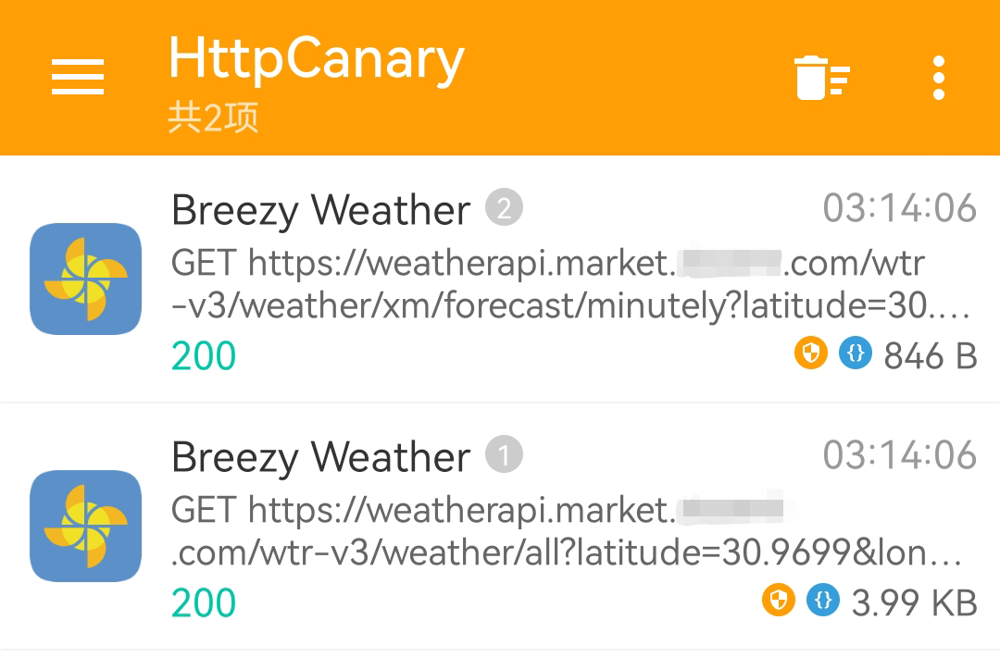

高版本 Android 设备无 Root 抓包 HTTPS 明文的简单解决方案¶
自 Android 7.0 起，系统不再信任用户安装的 CA 证书，这使得原有的 HTTPS 抓包手段在多数应用中不再有效。 解决该问题最直接的方式是将抓包工具提供的 CA 证书安装到系统证书目录，但这通常需要 Root 权限。 然而，目前多数主流品牌的设备已不再向普通用户提供 Root 通道， 甚至于以往支持 Root 的厂商近期也正逐步收紧对 Root 的开放策略，这使得获取 Root 权限愈发困难。 另一种替代思路是借助已 Root 的虚拟机环境，但这类方案不仅占用大量存储空间，还难以完整还原真机的运行环境，容易被应用检测并拒绝运行。 那在这样的背景下，是否存在一种适用于高版本安卓、无需额外设备、无需 Root、且能够有效捕获 HTTPS 明文的简单方法？
方法原理¶
每一个安卓应用可以通过修改 AndroidManifest.xml 中 <application> 的 android:networkSecurityConfig
来指定一个配置文件，用于调整自身的网络安全配置。
通过这种方式，我们能够自定义信任锚，即自定义哪些证书授权机构 (CA) 值得信赖，从而使应用能够信任抓包工具的证书。
演示环境¶
免责声明
本文所涉及的技术、工具及示例仅用于学习和研究目的，不得将上述内容用于商业或者非法用途， 否则，一切因不当使用本文信息而造成的任何后果由使用者自行承担！
| 名称 | 版本 | 备注 |
|---|---|---|
| 手机系统 | 鸿蒙 3.0.0 |
ro.build.version.sdk=29 |
| HttpCanary | 3.3.6 |
安卓老牌抓包工具，现更名为 Reqable |
| MT 管理器 | 2.18.4（需要 VIP） |
也可以用其他能够修改 APK 的工具替代，如：Apktool M |
| Breezy Weather | 6.0.11-rc |
本次演示所使用的教具 |
| OctoDroid | 4.6.13 |
也是本次演示所使用的教具 |
操作步骤¶
话不多说，我们立即开始实战！但是在开始之前，我们回想一下刚刚介绍的原理： 有些应用可能已经设置过了自己的网络安全配置文件，此时我们可以直接找到并修改它； 反之也有可能应用没有设置。 这两种情况的操作方式会有一点点的不同。
修改原有配置文件¶
这种情况的操作会简单不少，这里就以应用 Breezy Weather 举例。首先我们查看这个应用的 AndroidManifest.xml：
这里能看到 <application> 中 android:networkSecurityConfig 已经被定义，
然后我们查询资源的值以定位到配置文件在 APK 中的位置并编辑：
这里我们修改了第 3 行的 cleartextTrafficPermitted
为 "true"，表示允许明文流量。
然后还在第 9 行处添加了：
最后，我们回编译应用，安装后再抓包。看，我们成功了！ 
添加新的配置文件¶
并不是每个应用都定义了网络安全配置文件，比如我们这里用来演示的应用 —— OctoDroid。
此时我们可以先来到 APK 根目录的 res 文件夹，然后随便复制个 xml
文件并重命名为 my_network_security_config.xml，最后把文件内容全部替换：
至于为什么要绕这么一圈而不是直接在外部创建一个新的 XML 文件并添加到 APK。 这是因为
APK内的 XML 实际上都被编译为了二进制文件（AXML），并不是以明文存储。 如果你真的想试试会发生什么，我已经帮你试过了，这会触发报错：日志有点长，请点击展开查看
E AndroidRuntime: FATAL EXCEPTION: main E AndroidRuntime: Process: com.gh4a, PID: 15814 E AndroidRuntime: java.lang.ExceptionInInitializerError E AndroidRuntime: at com.gh4a.ServiceFactory.<clinit>(ServiceFactory.java:110) E AndroidRuntime: at com.gh4a.ServiceFactory.initClient(ServiceFactory.java:212) E AndroidRuntime: at com.gh4a.Gh4Application.onCreate(Gh4Application.java:124) E AndroidRuntime: at android.app.Instrumentation.callApplicationOnCreate(Instrumentation.java:1202) E AndroidRuntime: at android.app.ActivityThread.handleBindApplication(ActivityThread.java:7601) E AndroidRuntime: at android.app.ActivityThread.access$2600(ActivityThread.java:259) E AndroidRuntime: at android.app.ActivityThread$H.handleMessage(ActivityThread.java:2440) E AndroidRuntime: at android.os.Handler.dispatchMessage(Handler.java:110) E AndroidRuntime: at android.os.Looper.loop(Looper.java:219) E AndroidRuntime: at android.app.ActivityThread.main(ActivityThread.java:8673) E AndroidRuntime: at java.lang.reflect.Method.invoke(Native Method) E AndroidRuntime: at com.android.internal.os.RuntimeInit$MethodAndArgsCaller.run(RuntimeInit.java:513) E AndroidRuntime: at com.android.internal.os.ZygoteInit.main(ZygoteInit.java:1109) E AndroidRuntime: Caused by: java.lang.RuntimeException: Failed to parse XML configuration from my_network_security_config E AndroidRuntime: at android.security.net.config.XmlConfigSource.ensureInitialized(XmlConfigSource.java:89) E AndroidRuntime: at android.security.net.config.XmlConfigSource.getPerDomainConfigs(XmlConfigSource.java:55) E AndroidRuntime: at android.security.net.config.ManifestConfigSource.getPerDomainConfigs(ManifestConfigSource.java:45) E AndroidRuntime: at android.security.net.config.ApplicationConfig.ensureInitialized(ApplicationConfig.java:175) E AndroidRuntime: at android.security.net.config.ApplicationConfig.getTrustManager(ApplicationConfig.java:120) E AndroidRuntime: at android.security.net.config.RootTrustManagerFactorySpi.engineGetTrustManagers(RootTrustManagerFactorySpi.java:65) E AndroidRuntime: at javax.net.ssl.TrustManagerFactory.getTrustManagers(TrustManagerFactory.java:301) E AndroidRuntime: at okhttp3.internal.platform.Platform.platformTrustManager(Platform.kt:81) E AndroidRuntime: at okhttp3.OkHttpClient.<init>(OkHttpClient.kt:237) E AndroidRuntime: at okhttp3.OkHttpClient$Builder.build(OkHttpClient.kt:1069) E AndroidRuntime: at com.meisolsson.githubsdk.core.ServiceGenerator.<clinit>(ServiceGenerator.java:64) E AndroidRuntime: ... 13 more E AndroidRuntime: Caused by: android.content.res.Resources$NotFoundException: File res/my_network_security_config.xml from xml type xml resource ID #0x7f130003 E AndroidRuntime: at android.content.res.ResourcesImpl.loadXmlResourceParser(ResourcesImpl.java:1711) E AndroidRuntime: at android.content.res.Resources.loadXmlResourceParser(Resources.java:2400) E AndroidRuntime: at android.content.res.Resources.getXml(Resources.java:1343) E AndroidRuntime: at android.security.net.config.XmlConfigSource.ensureInitialized(XmlConfigSource.java:82) E AndroidRuntime: ... 23 more E AndroidRuntime: Caused by: java.io.FileNotFoundException: Corrupt XML binary file E AndroidRuntime: at android.content.res.AssetManager.nativeOpenXmlAsset(Native Method) E AndroidRuntime: at android.content.res.AssetManager.openXmlBlockAsset(AssetManager.java:1159) E AndroidRuntime: at android.content.res.ResourcesImpl.loadXmlResourceParser(ResourcesImpl.java:1692) E AndroidRuntime: ... 26 more
之后在 resources.arsc 中定义这个新添加的 xml 文件：

{kind=link}
{kind=link}
{kind=link}
{kind=link}
{kind=link}
最后在 AndroidManifest.xml 中应用：

最后重新打包再安装就搞定啦！
局限性¶
因为这种方法会修改应用的安装包，一些有签名校验的应用在重签名后会变得不可用。 此时我们可以用一些自动工具来去除校验，也可以自己手动去去除。 但是如果应用加壳了，修改起来就会比较麻烦。
还有一些极其特殊的情况，应用会使用自己的 CA 证书，此时本方法也是无效的。